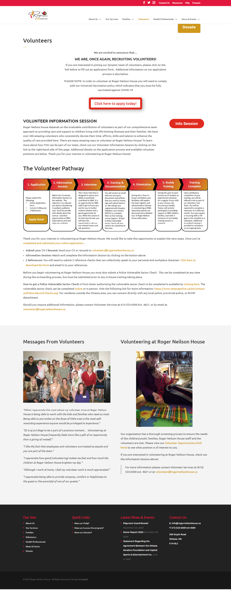

Revitalizing compassion
The redesign of Roger Neilson's House.
A Case Study by: ANIKA MCPHEE, JULIE NG, CHIARA FALLANI, RAINA AL HUSSAMI
"A rich and effective computational system must have a friendly user interface with appealing usability features that provides excellent user experience. In order to develop interactive systems with the best user experience, an innovative iterative approach to user interface engineering is required because it is one of the most challenging areas given the diversity of knowledge, ideas, skills and creativity needed for building smart interfaces in order to succeed in today’s rapidly paced and tough, competitive marketplace"
Empathy
To better understand our users, we employed diverse approaches to analyze their behaviors, desires, necessities, and objectives.
User interviews
Online Surveys
Usability Study
Heuristic Evaluation
Competitive analysis
Empathy Map
Affinity Diagram

Define
The next step in the design process was to define the problem. For this step, we crafted user insight statements and the problem statement. We defined the problem to be: The volunteer application process has been redesigned to maximize a positive user experience. We've observed that users are less likely to complete the application process if required to re-enter information. following the problem statement, we conducted a feature prioritization matrix and user journey mapping.
User Insight Statement
Problem Statement
Feature Proiritization Matrix
User Journey Map

Ideate
How might we save a user's information to make the application process less redundant? The key performance indicators that will measure the level of success are by an increased volume of applications and time spent on the task. following the problem statement, we conducted a feature prioritization matrix and user journey mapping.
User Insight Statement

Design
Four different designs were created for the homepage. The team then discussed the best aspects of each wireframe. We then moved forward with choosing one of the designs and incorporating features we liked from others. After that, we designed the additional flows and utalized site mapping. The result of our sitemapping yeilded the addition of a search bar, user login, and an active donate link so users can donate at any time. Lo-fi prototypes were created and a UI style guide.
Last updated 3 mins ago
Test
The testing was conducted remotely, involving a moderated usability study with seven participants. They were given four tasks to assess our redesigned sitemap and user flows. Our findings indicated that 60% of the participants preferred having the 'About Us' section included in the primary navigation bar rather than the secondary navigation links, as originally designed. In response to this valuable feedback, we made the necessary changes and incorporated the About section into the primary navigation bar. Another significant insight we gained from the study is the crucial importance of users being aware that they are on an official not-for-profit webpage. This is particularly crucial for volunteers and donors, as it builds trust and encourages their involvement. To achieve this, easy access to the About Us section was identified as a vital step in establishing the organization's credibility and reliability.
Last updated 3 mins ago
Summary
For transcript of user research see here:
Last updated 3 mins ago
Original Volunteer Pathway
This is the original volunteer pathway. Our usability study concluded that users are overwhelmed by the amount of text on the page
Redesign Volunteer Pathway

The redesign focused on legibility, simplicity and transparency. We limited the amount of unnecessary information as the original design resulted in users feeling overwhelmed. Time is valuable for users, if they percieve the application will be a long process, it is less likely that they will complete the application process. By adding steps and estimated time of completion we are giving users that informed choice and respects their times.